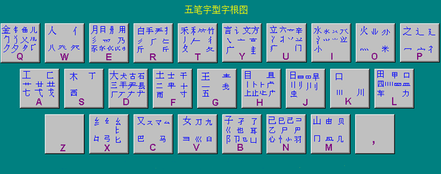

五笔字根表 蹭网神器下载
左手：（横区）
11-G 王旁青头戋（兼）五一，(“兼”与“戋”同音)
12-F 土士二干十寸雨。
13-D 大犬三羊古石厂， （“羊”指羊字底“”）
14-S 木丁西，
15-A 工戈草头右框七。 （“右框”即“匚”）
左上：（撇区）
31-T 禾竹一撇双人立， (“双人立”即“彳”), 反文条头共三一。 (“条头”即“夂”)
32-R 白手看头三二斤，
33-E 月彡(衫)乃用家衣底。
34-W 人和八，三四里， (“人”和“八”在34里边)
35-Q 金勺缺点无尾鱼， (指“勹), 犬旁留叉儿一点夕 氏无七（妻）。
右手：（竖区）
21-H 目具上止卜虎皮，
22-J 日早两竖与虫依。
23-K 口与川，码元稀，
24-L 田甲方框四车力。 (“方框”即“囗”)
25-M 山由贝，下框几。
右上：（捺区）
41-Y 言文方广在四一， 高头一捺谁人去。
42-U 立辛两点六门疒,
43-I 水旁兴头小倒立。 (指“氵”)
44-O 火业头，四点米.
45-P 之字军盖建道底， (即“之、宀、冖、廴、辶”)摘礻(示)衤(衣)。
键盘下面：（折区）
51-N 已半巳满不出己， 左框折尸心和羽。
52-B 子耳了也框向上。 (“框向上”即“凵”)
53-V 女刀九臼山朝西。 (“山朝西”即“彐”)
54-C 又巴马，丢矢矣， (“矣”去“矢”为“厶”)
55-X 慈母无心弓和匕， 幼无力。 (“幼”去“力”为“幺”)